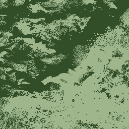

BMP
windows標準の非圧縮形式(圧縮モードもあるがマイナーなので無視)。Macにもほぼ同じ形式がある。
ビットマップの名の通り画像を構成するドット１つづつに1ビットを対応させた形式。
だったのだが、今は実際は画像がカラーなので１ドットに対応するのは1ビットではない。が考え方は同じ。
1ドットに対して使用するビット数が固定されているのがビットマップである。
通常使われるフルカラー(24bitカラー、16777216色)の場合、1ドット当たり24bit、つまり3Byteのデータ量がある。例えば200万画素のデジカメで撮った画像をBMPにすれば、
200万×3Byte = 6,000.000Byte = 6MB
もの大容量となる。JPGで保存すれば相当高画質でも0.5MB程度で収まるだろう。
色数の少ない画像に対しては「インデックスカラー」という方式によりデータを節約することが出来る。
通常は「赤151:緑251:青251」「赤251:緑68:青0」と言った形式で色を記録するところを、「色その1」「色その2」と記録しておいて、別に「色その1=赤151:緑251:青251」「色その2=赤251:緑68:青0」と書かれたインデックス(パレット)を用意しておく方法だ。
BMPではこのインデックスカラーは256色、16色、2色(モノクローム)に対応している。
モノクロームは白黒ということではなく、任意の2色が使える。(ただしペイントでは白黒固定)
ここに画像のサイズを減らすひとつの方法がある。"減色"である。減色すれば当然データは少なくなる。これはBMPに限らずGIFやPNGでも有効な方法である。
サンプルを示すと、
|
フルカラー : 196,662Byte
|
256色 : 66,614Byte(元の1/3)
|
|
|
|
|
|
|
16色 : 32,886Byte(1/6)
|
2色 : 8,254Byte(1/24)
|
|
|
|

|
16色パレット
 |
256色に減色してもほとんど違いは分からない。ただこの写真は色数があまり多くないので、極彩色の写真ならはっきり劣化するかもしれない。
16色にしても、色は多少不鮮明だが意外なほど元画像に近く仕上がっている。
本当に16色しか使っていないのかと疑う人のために(というか自分も信じられない)、使われている16色パレットを右に示しておいた。
そして2色は…さすがにちょっと問題外か。
注:上の画像はBMPです。Windows環境なら大抵のブラウザ見えますが、見えなかったら以下からダウンロードして見てください。
フルカラー
256色
16色
2色
{kind=link}
{kind=link}
{kind=link}
{kind=link}